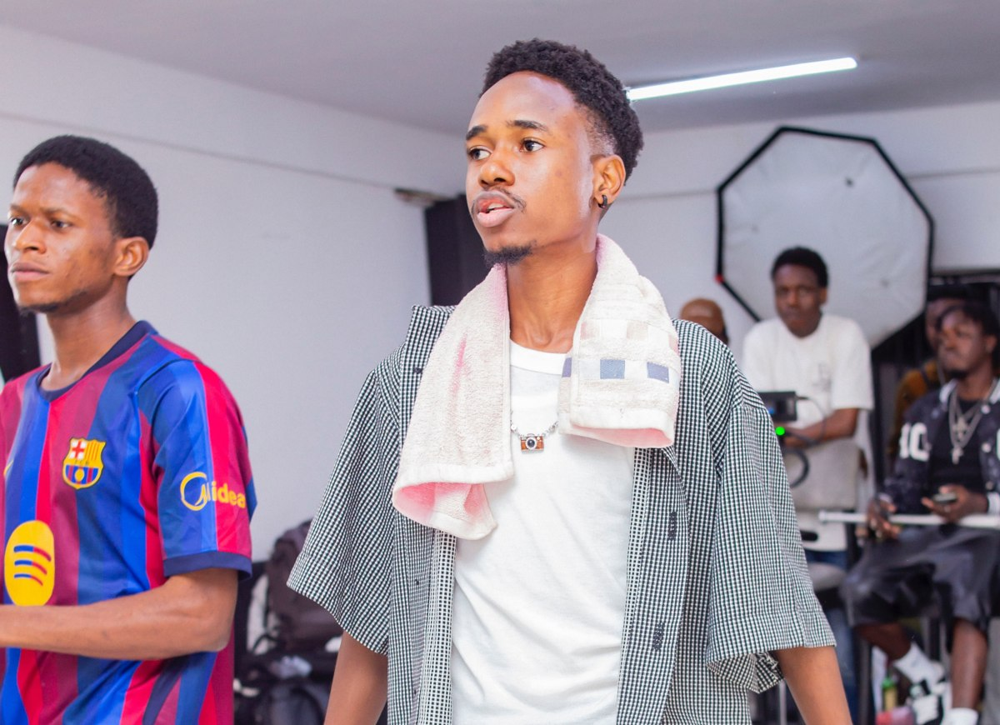
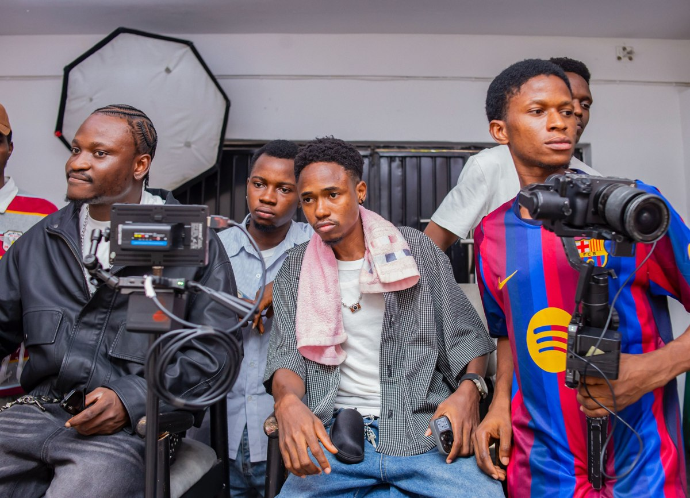

Ayomide Osuolale
I’m a videographer, director and editor working across music videos, dance and promotional films.
I develop concepts with artists and teams, then carry the work through filming and post-production, including colour grading, sound and motion graphics.
I studied Geology at the University of Ibadan and work across Lagos and Ibadan.
Cinematography, Direction & Editing
Download CV
